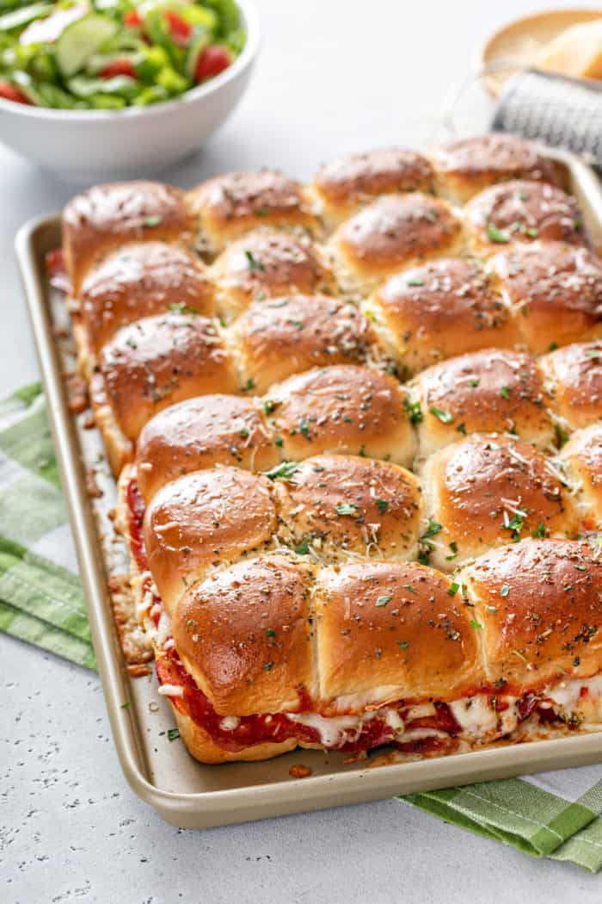

Pizza Sliders

Description
These sliders really taste like pizza (as they should) but with a hint of sweetness from the Hawaiian rolls. Trying to separate them can get messy but they are absolutely delicious.
Ingredients:
- Cooking spray
- Mozzarella
- Black peppper
- Tomato sauce
Steps:
- Preheat the oven to 375 degrees F (190 degrees C). Line a rimmed baking sheet with parchment, and place a cooling rack on baking sheet. Spray rack with cooking spray.
- Stir together mozzarella, Italian cheese blend, basil, pepper, and 1 1/2 teaspoons of the Italian seasoning in a small bowl until combined. Set aside.
- Stir together pizza sauce and pesto in another small bowl. Set aside.
- Without separating the individual rolls, cut the entire slab of rolls in half horizontally using a serrated knife. Place bottom layer of rolls on the prepared baking sheet. Set top layer of rolls aside.
- Sprinkle bottom layer of rolls evenly with half of the cheese mixture; top evenly with half of pepperoni and half of the sauce. Repeat layers once.
- Bake in the preheated oven until cheese melts, about 15 minutes.